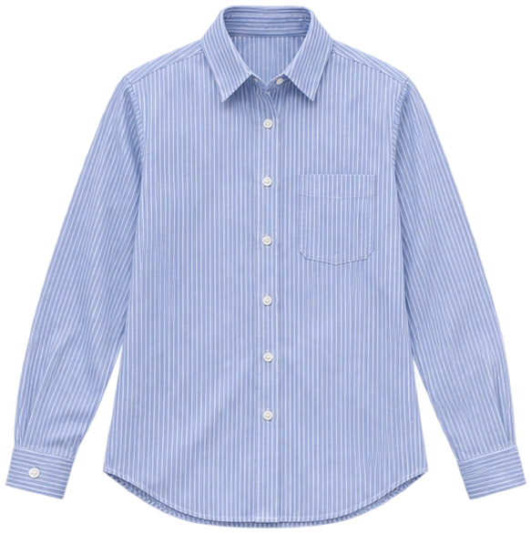
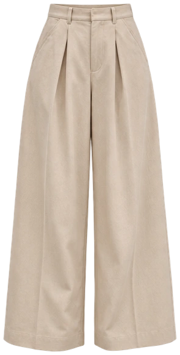
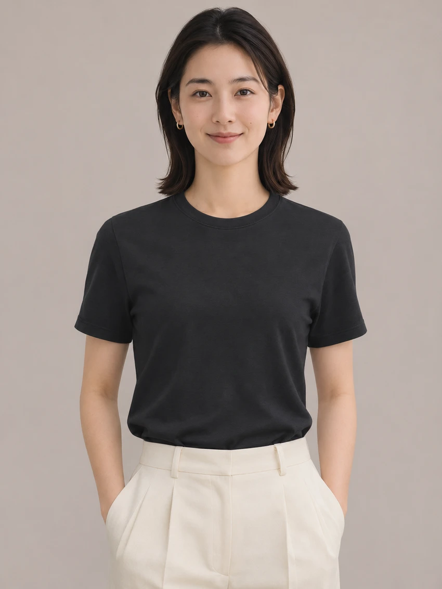
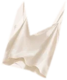
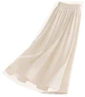
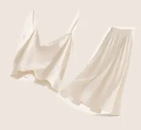
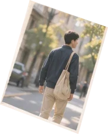

✓推荐上传

上衣平铺

裤子平铺

真人上身

上装区

下装区
×请避开这些图


衣物被遮挡
细节模糊
怎样把几件衣服叠穿在一起？
01每件衣服各选一张图
在「单件试穿」里，从本地上传衣服图片，或从「我的衣服」里选。选好两件上衣后，上传按钮下方会出现「将这两件叠穿」。
例如选了白 T 恤和蓝衬衫，直接生成会得到两张图，每张试一件。点「将这两件叠穿」，两件就会穿在同一个人身上，整套出一张图。
02生成前，按“从内到外”确认顺序
系统会先排好穿着顺序。列表第一件贴身穿，最后一件穿在最外面。例如「内层：白 T 恤，外层：蓝衬衫」，表示衬衫穿在 T 恤外面。两件衣服可以点「交换顺序」对调。
三件及以上也可以叠穿，例如白 T 恤 → 开衫 → 大衣。生成时以你最后确认的顺序为准，内层衣服只会在领口、袖口、敞开的衣襟等实际露出的部位显示。
03配同一条裤子时，可以选两种穿法
以白 T 恤、蓝衬衫和牛仔裤为例。
分别搭配 白 T 恤配牛仔裤是一套，蓝衬衫配牛仔裤是另一套。只选一套出 1 张，两套都选出 2 张。
叠穿成一套 白 T 恤穿里面，蓝衬衫穿外面，再配牛仔裤，整套出 1 张。试裤子需要一张能看清全身的本人照。
04只想换外套时，可以沿用照片里的内搭
例如本人照里穿着白 T 恤和牛仔夹克，选一件新西装后，西装会替换牛仔夹克，保留照片里能看清的白 T 恤。
想换掉白 T 恤，可以点「更换内搭」，从「我的衣服」里选，或上传新的内搭图。外套敞开还是扣合，跟随所选商品图；如果新外套是敞开的，而原照里看不清内搭，生成前会提示你补选。
05生成前可以随时改回分别试穿
点「取消叠穿」，已选衣物会保留，恢复为每件各出一张。可以先看底部的「预计生成」张数，确认后再点生成。